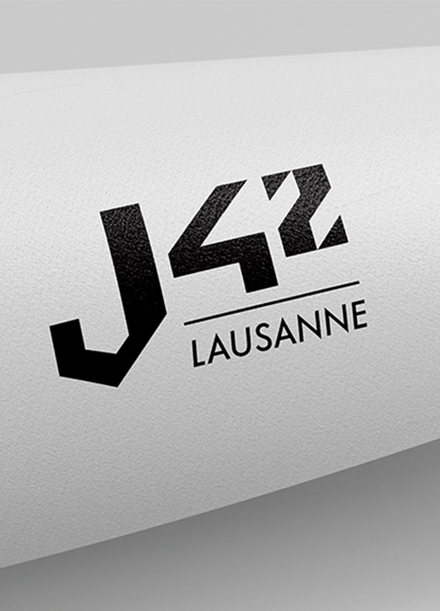

Une marque, deux fonds.
Le monogramme garde toute sa force en applique : décliné sur les supports physiques, il reste net et reconnaissable, même réduit.

Tous les projets
J42 Lausanne · Anthony Da Costa — 2024